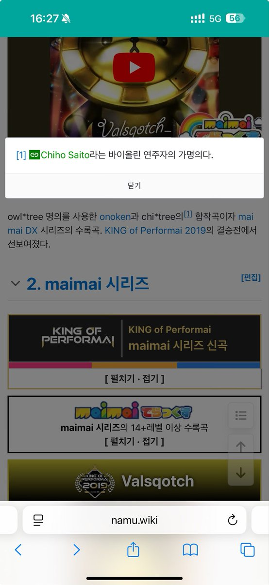

小虚空🍥
@tokerumaisurii
@mangoiceshake 比如金熊的声明作者为owl＊tree feat.chi＊tree，这个owl＊tree就是onoken，然后chi＊tree是一位叫Chiho Saito的人
（截图页面链接
https://t.co/EWFsLzQ96G
）

Chiho Saito
@Site_Chiho
本日解禁、神曲と話題のValsqotch！
皆様楽しんでおられますね〜
私もプレイすべきかな( ˘ω˘ )
そしてowl＊treeさん㊗️アルバム発売！chi＊treeとして参加しております🐤ロングリミックスではこだわりの音作りから楽しいレコーディング、超絶技巧の後は生きている喜びを感じるものですね。笑
皆様何卒！ https://t.co/spjhplepbW
小虚空🍥
@tokerumaisurii
@mangoiceshake 因为onoken/owl＊tree的专辑参与者都会给个name＊tree的别名